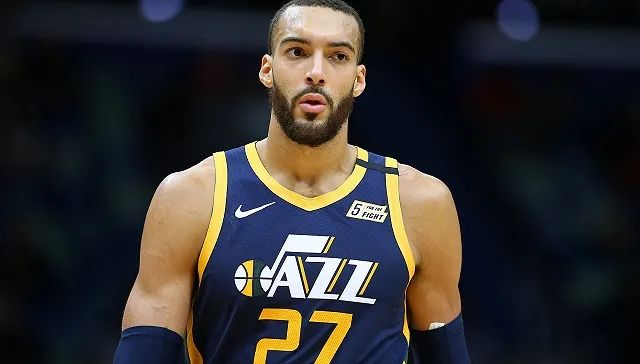

美国疫情日记①：从祝福中国，到NBA停摆，到全美紧急
原文链接 备份链接 体坛周报特约记者吴家驹华盛顿报道 2月3日，在通道找比尔为中国录祝福的自己，完全不会想到：37天后的NBA，会因为疫情而停摆。也想不到自己短暂的生涯，可能会以这种方式结束。 全球第一例感染者至今无从考证，进入2020年 …

爵士中锋戈贝尔为NBA首个新冠病毒肺炎确诊病例。（图片来源：视觉中国）
记者：李晓庄
“
截至目前，NBA共有7支球队14名人员确诊，猛龙和雷霆两支队伍宣布全队检测结果为阴性。
”
自爵士中锋戈贝尔确诊感染新冠病毒之后，联盟已有多支球队安排球员进行检测。
截至北京时间3月21日，NBA共有9支球队进行了检测，其中7支队伍的14名人员确诊，猛龙和雷霆宣布全队检测结果为阴性。
万幸的是，目前所有感染病毒的球员都是轻症，或还没有表现出症状。
此外，球队在医疗资源紧缺的情况下接受检测引来了大量的批评。NBA回应称，对球员群体进行全面检测，其实是保护他人健康的行为。联盟不希望球员成为“超级传播者”。
然而，联盟还有21支球队仍未进行检测，包括和确诊病例有过直接接触的球队，如尼克斯队、公牛队和马刺队等。
北京时间3月18日，勇士队总经理鲍勃·迈尔斯(Bob Myers)表示，因检测试剂短缺，只有在球员出现症状后才会去做检测。
感染名单如下：
爵士队：北京时间3月12日，戈贝尔和米切尔相继承认自己感染新冠病毒。
活塞队：北京时间3月15日，官方宣布1名球员确诊。据美国媒体报道，这名球员是克里斯蒂安·伍德。
篮网队：北京时间3月18日，官方宣布4名球员确诊。随后，杜兰特承认自己为其中一员。3月19日，篮网队官方辟谣，否认欧文、勒韦尔和丁威迪为确诊球员。
掘金队：北京时间3月20日，官方宣布1位成员确诊，但未公布是否为球员。
76人队：北京时间3月20日，官方宣布3名成员确诊，但未公布是否为球员。
湖人队：北京时间3月20日，官方宣布2名球员确诊，但没有公布具体名单。
凯尔特人：北京时间3月20日，官方宣布1名球员确诊，斯玛特通过社交媒体承认是自己。

原文链接 备份链接 体坛周报特约记者吴家驹华盛顿报道 2月3日，在通道找比尔为中国录祝福的自己，完全不会想到：37天后的NBA，会因为疫情而停摆。也想不到自己短暂的生涯，可能会以这种方式结束。 全球第一例感染者至今无从考证，进入2020年 …
原文链接 备份链接 湖人球星詹姆斯表示不愿进行空场比赛。（图片来源：Getty） 记者：李晓庄 “ 如果空场计划确定实行，球队每场比赛将损失约200万美元的门票收入。 ” 当地时间3月6日晚，联盟再次下发备忘录，要求各支球队做好包括“推迟 …
原文链接 备份链接 图片来源：视觉中国 “ NBA已经提醒各球队需要准备应急预案——仅在必要人员在场的情况下进行比赛。 ” 虎扑篮球3月7日消息，据NBA记者Shams Charania报道，消息人士透露，联盟已经向各支球队发放了备忘录， …
原文链接 备份链接 摘要：寒假上日语课期间，21岁的小孙突然感到浑身酸痛，出现症状8天后，他被确诊为新型冠状病毒肺炎。整个春节，他往返于武汉的家和医院之间，看见了疑似感染的医生，无法确诊的患者，濒临死亡的病人。因为病情较轻，他没有住院，在 …
原文链接 备份链接 【财新网】（记者 刘登辉 黄姝伦）国家卫生健康委新闻发言人、宣传司副司长米锋今日（3月21日）在国务院联防联控机制新闻发布会上表示，3月11日世卫组织宣布疫情具有大流行特征以来，内地累计境外输入病例从85例增长至269 …